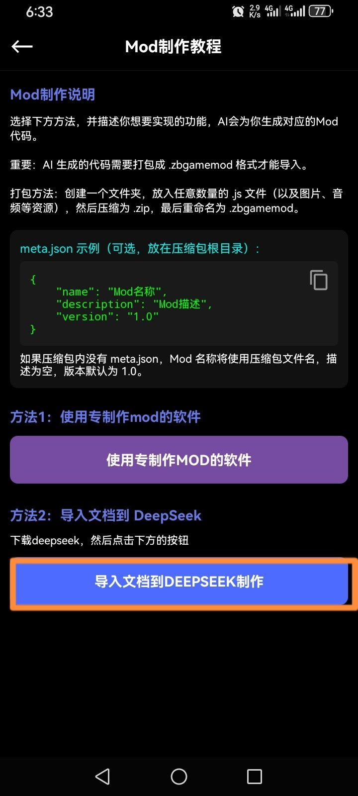
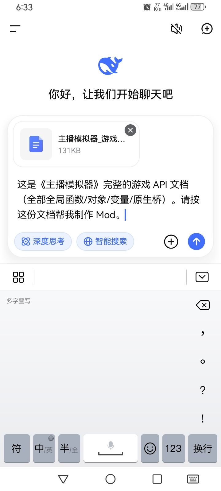
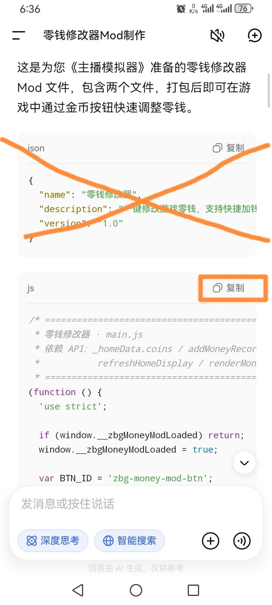
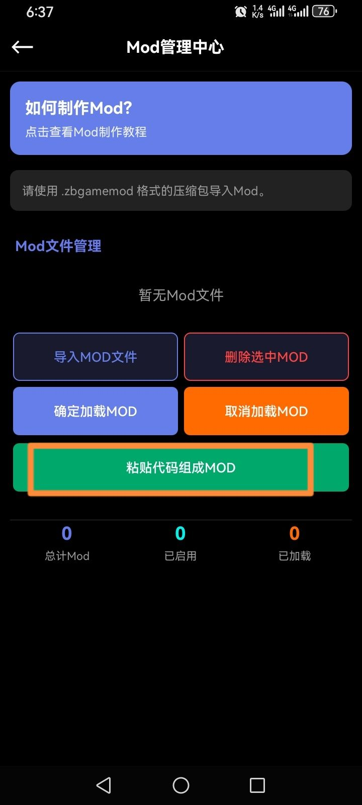
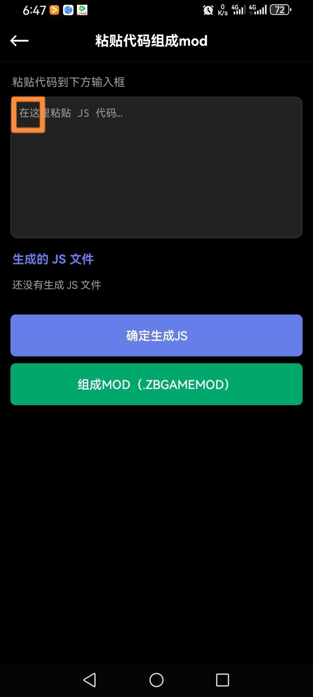
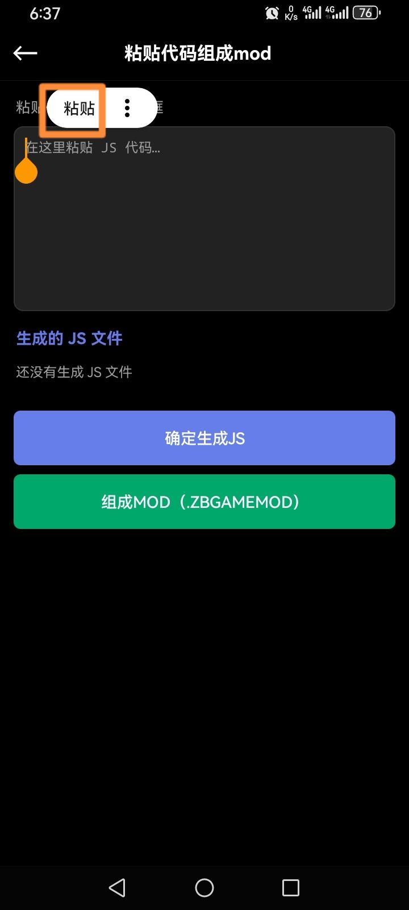
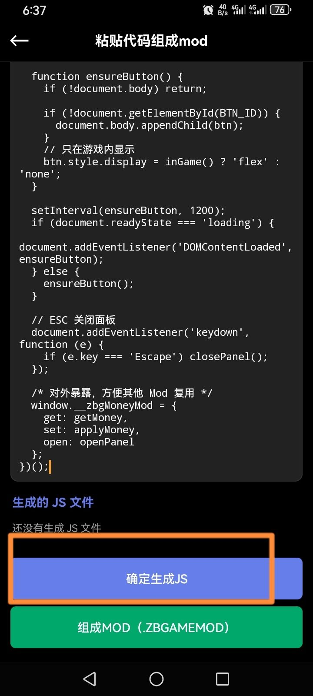
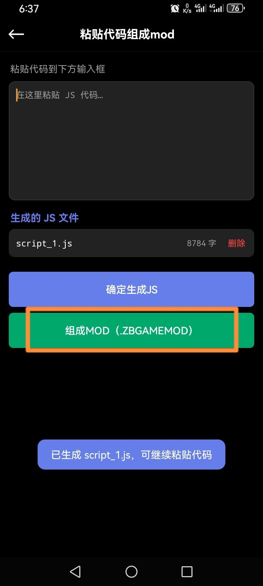
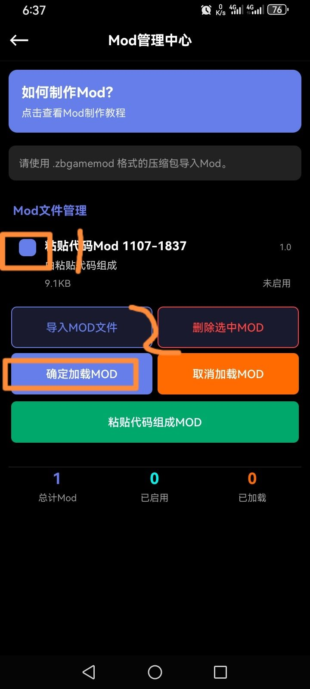

首先，我们来到mod制作教程页面
然后我们再下载一个deepseek软件
1.点击那个方法二下方的按钮

2.然后我们会跳转到deepseek里，然后输入我们的mod制作要求（例:“制作一个零钱修改器mod），然后发送

3.ai给出结果后，我们不用管json，在js一行右边点那个复制

4.然后我们再回到游戏里（mod管理中心），点击“粘贴代码组成mod”

5.我们在这里长按

6.然后再点击粘贴

7.然后我们再点击确定生成js

8.然后再点击组成mod

9.然后再勾选，再确定，这样就成功了

注意事项:
1.如果ai给出多个js，那就再复制再粘贴再生成js再组成mod